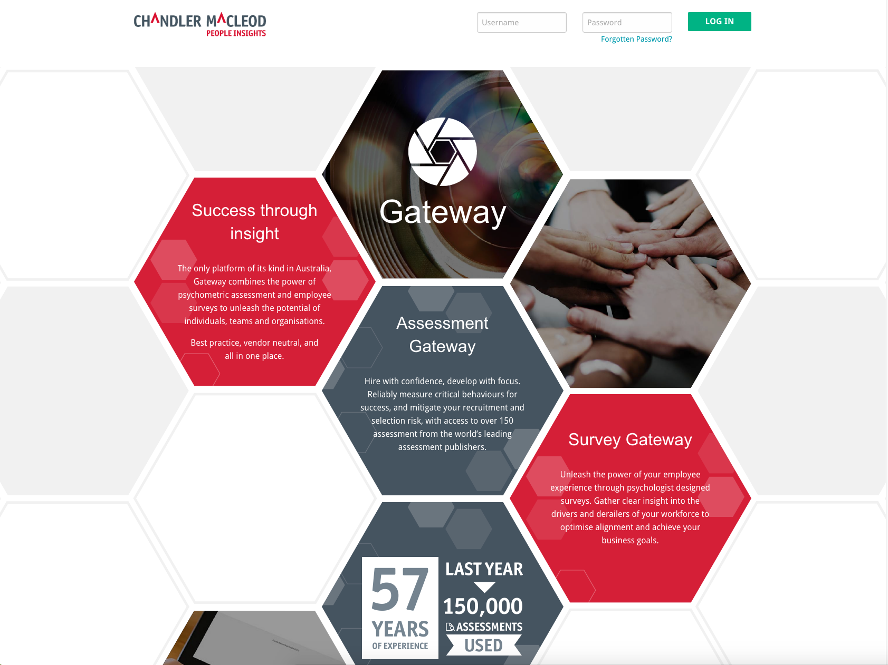

Chandler Macleod - Front End Developer
November 2015 - September 2017
At Chandler Macleod, I worked in the Innovation and Product Development team in the psychometric assessment department. My role entailed producing the user journey based on business requirements. This included creating the user experience and workflow, designing the user interface and developing the front end components.
- Scrum master, included running retrospectives and stand ups.
- Redesigned and developed the front end code base for the assessment platform Gateway. Implemented Foundation framework, SASS and MVC structure. The new site is now responsive and caters to viewing on different devices.
- Produced the user experience for an ecommerce site from concept meetings. This included prototyping out workflows and creating feature documentation. Later I designed the user interface and developed the front end for the site.
- Scoped projects to be completed within designated timeframes and managed work in Jira.
- Designed the front end architecture including implementing frameworks and code style guide.
- Designed and built an online career transition resource centre. As part of this project I developed a resume builder using AngularJS.
- Worked alongside and coordinated with a team of back end developers to build various site components based on business specifications in a .net environment using cshtml.
- Developed components to be reusable by using partials that could be called in different sections of the site and used in different products built using the same code base.
- Organised CSS into modules and partials to assist with scaleability.
- Introduced new technologies, for example AngularJS, and pitched how they would improve the system.
- Developed time sensitive projects for clients to a high standard.
- Managed source code with Git.
- Implemented regression testing.
